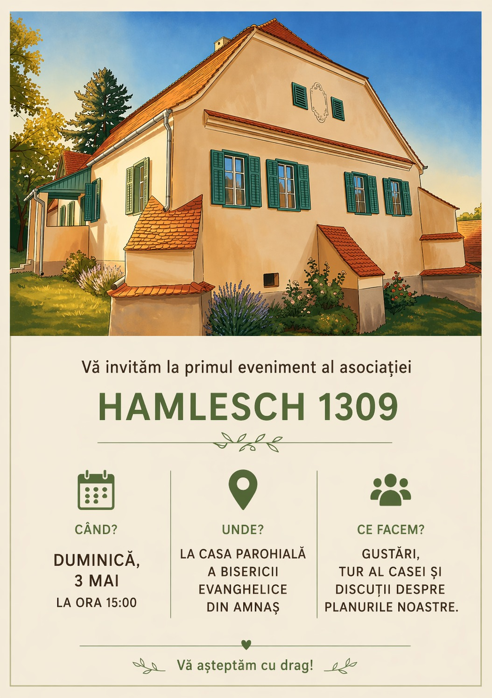
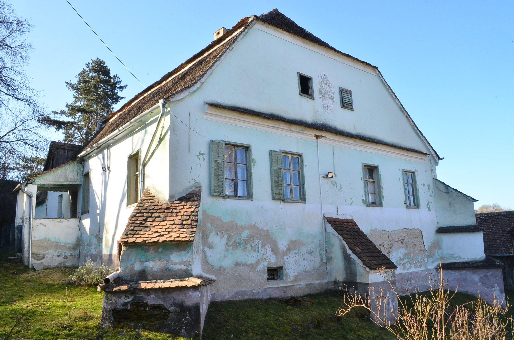
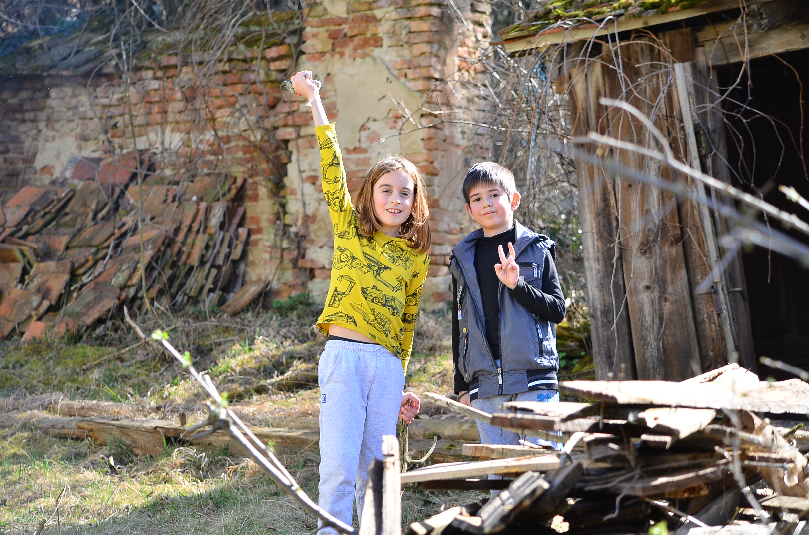
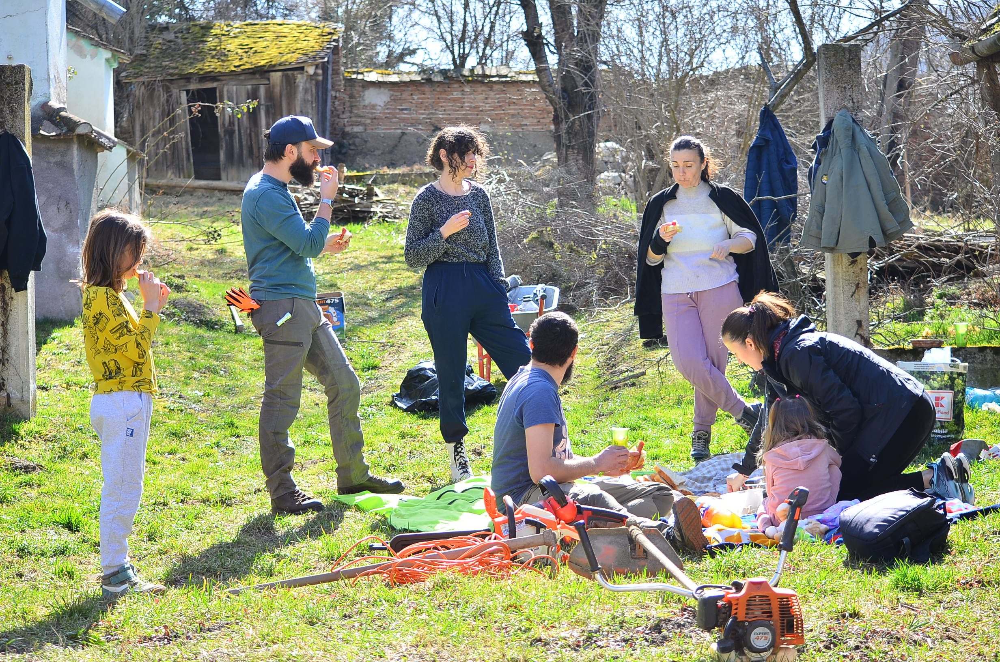
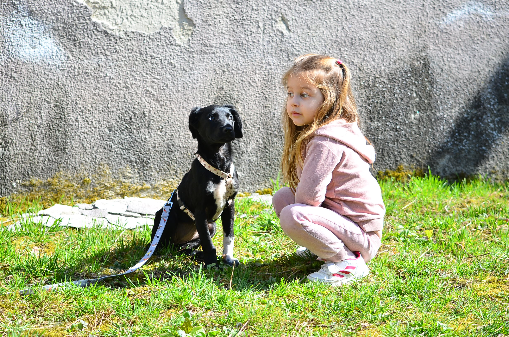
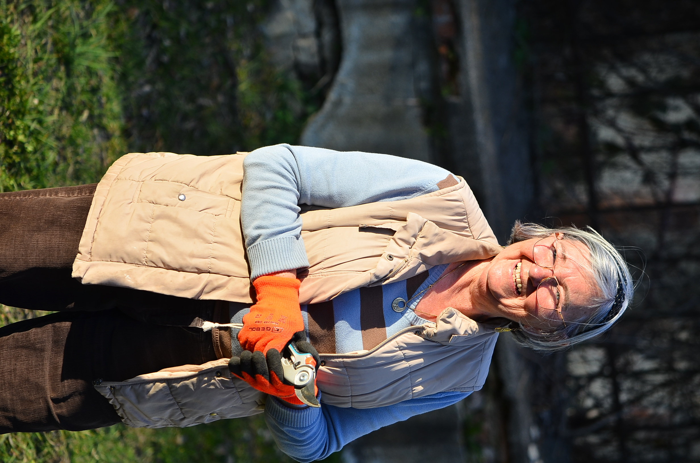

03
Mai
Primul eveniment al asociației
Momentan acesta este singurul eveniment upcoming. Apasă pe detalii pentru program complet și informațiile din afiș.
Amnaș · Sibiu · Est. 2026
Patrimoniu · Comunitate · Tradiție

Casa parohială evanghelică, Amnaș, Jud. Sibiu — centrul activității asociației
Asociația Hamlesch 1309 s-a constituit în 2026 cu scopul de a proteja, restaura și valorifica patrimoniul cultural, istoric și construit al localității Amnaș și al zonei aferente.
Numele nostru evocă denumirea medievală a localității Amnaș — Hamlesch — atestată din anul 1309, un simbol al continuității istorice pe care ne angajăm să o onorăm și să o transmitem generațiilor viitoare.
Suntem o organizație neguvernamentală, apolitică și independentă, dedicată dezvoltării vieții comunitare, educaționale, culturale și sociale.
Activitatea asociației gravitează în jurul a trei axe esențiale, prin care urmărim să creăm impact durabil în comunitate și în patrimoniul local.
Protejarea, restaurarea și conservarea clădirilor istorice din Amnaș — inclusiv casa parohială și Biserica Evanghelică — cu respectarea tehnicilor tradiționale de intervenție.
Organizarea de evenimente culturale, șezători, târguri, expoziții și ateliere care aduc oamenii împreună și revitalizează viața socială a satului.
Inițiative educaționale pentru copii și tineri, sprijin comunitar și promovarea patrimoniului în mediul online prin conținut digital, arhive foto-video și publicații.
Printr-un spectru larg de activități, transformăm valorile în acțiuni concrete și sustenabile pentru comunitate.
Asociația este deschisă colaborărilor cu instituții publice, ONG-uri, universități, biserici și specialiști în restaurare.
Intervenții pe clădiri de patrimoniu cu expertiză specializată în tehnici istorice.
Șezători, târguri, workshopuri și expoziții care celebrează tradițiile locale.
Bibliotecă pentru copii, ateliere educaționale și sprijin comunitar activ.
Colaborări cu instituții publice, ONG-uri, biserici, școli și universități.
Creare de conținut digital, arhive foto/video și promovare online a patrimoniului.
Editarea și publicarea de cărți, vederi și materiale promoționale despre Amnaș.
Consolidarea societății civile și watchdog pentru interesele comunității.
Implicarea voluntarilor locali și naționali în proiectele asociației.

Momentan acesta este singurul eveniment upcoming. Apasă pe detalii pentru program complet și informațiile din afiș.





Suntem un nucleu de oameni din comunitate și din afara ei, uniți de ideea că patrimoniul trebuie trăit, nu doar conservat pe hârtie.


Secțiunea nu este încă lansată. Dacă ești interesat, ne poți scrie pe email.
Pentru întrebări, idei, colaborări sau implicare în proiecte, ne poți contacta direct prin email sau social media.